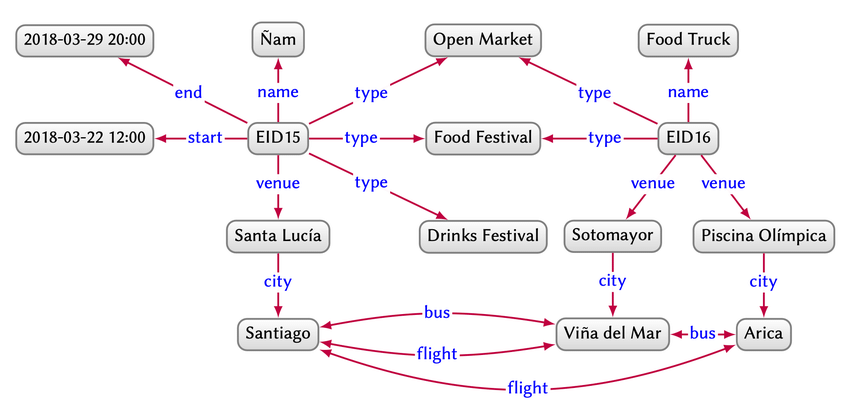
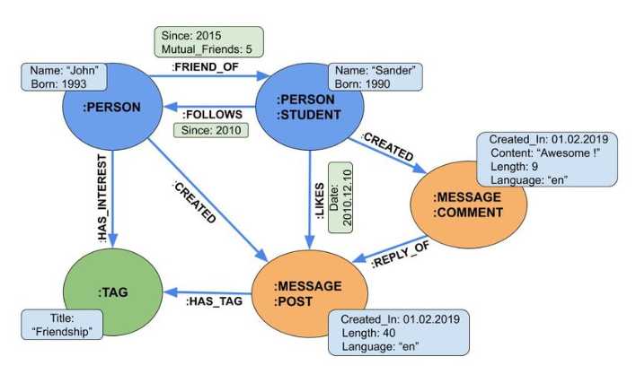
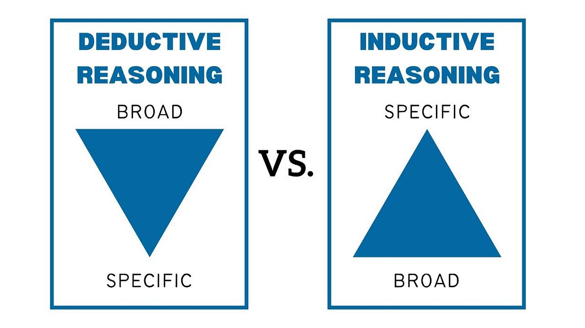
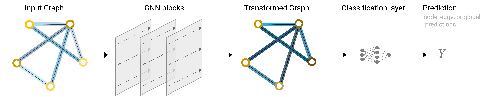
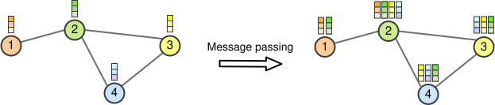
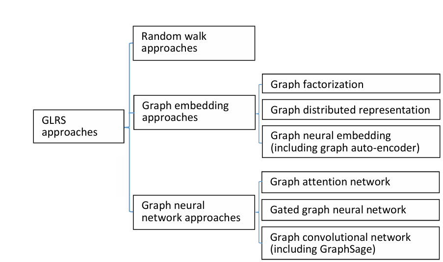

Teoria
In questa sezione affrontiamo la teoria dietro ciò che ha reso possibile questo progetto. Partendo dall’informazione su una struttura a grafo arriviamo alla generazione di una nuova informazione.
Introduction to Knowledge Graphs
I Knowledge Graphs (KG) sono reti semantiche che rappresentano relazioni tra entità.
Dal punto di vista strutturale, si basano sui grafi, una struttura matematica discreta che, attraverso nodi e archi, consente di modellare oggetti e relazioni del mondo reale.
Queste strutture permettono di rappresentare informazioni che possono apparire inizialmente disconnesse, formando reti articolate di interazioni e dipendenze semantiche.
I Knowledge Graph possono essere memorizzati in Graph Database come Neo4j oppure interrogati tramite standard come RDF e SPARQL, che consentono di rappresentare e interrogare dati relazionali in forma semantica.
Una definizione di Knowledge Graph è la seguente:
“A graph of data intended to accumulate and convey knowledge of the real world, whose nodes represent entities of interest and whose edges represent relations between these entities.”
Ovvero:
Un grafo di dati progettato per accumulare e trasmettere conoscenza del mondo reale, i cui nodi rappresentano entità di interesse e i cui archi rappresentano le relazioni tra queste entità.
Types of Knowledge Graphs
I Knowledge Graph possono essere modellati secondo diversi paradigmi, a seconda del tipo di dato e del formalismo scelto. Tra i modelli principali troviamo:
Directed Edge-Labelled Graph
Heterogeneous Graph
Property Graph
Directed Edge-Labelled Graph
I Directed Edge-Labelled Graph sono grafi in cui:
i nodi rappresentano oggetti, entità o concetti;
gli archi collegano i nodi e sono caratterizzati da:
una direzione, che indica il verso della relazione;
un’etichetta, che descrive il tipo di relazione tra i due nodi.
Dal punto di vista matematico, un directed edge-labelled graph può essere visto come un grafo diretto tradizionale:
dove:
\(U\) è l’insieme dei nodi;
\(L\) è l’insieme degli archi diretti.
A questa struttura si aggiunge un’etichetta per ogni arco \(\left(u_i, u_j\right) \in L\), ottenendo un insieme esteso di archi:
Nell’ambito della rappresentazione della conoscenza, questo tipo di grafo è fondamentale perché costituisce la base del Resource Description Framework (RDF).
Il Resource Description Framework è un modello standard per la codifica dei dati nel Web semantico.
La sua struttura facilita l’integrazione di dati provenienti da schemi diversi e supporta l’evoluzione dello schema nel tempo senza richiedere modifiche strutturali invasive.
In RDF, l’informazione è rappresentata tramite triplette nella forma:
dove:
$s$ = soggetto, cioè l’entità di partenza;
$p$ = predicato, cioè la relazione;
$o$ = oggetto, cioè l’entità di arrivo oppure il valore associato.


Esempio di directed edge-labelled graph.
In altre parole, una tripletta RDF può essere interpretata come un arco orientato ed etichettato:
Per questo motivo, un RDF store può essere visto come una collezione di relazioni espresse sotto forma di grafo diretto etichettato.
Il linguaggio standard utilizzato per interrogare un RDF triple store è SPARQL, che consente di definire pattern di ricerca sulle triplette RDF e recuperare informazioni sulla base delle relazioni presenti nel grafo.
Property Graph
I Property Graph sono anch’essi composti da nodi e archi, ma con una differenza fondamentale: sia i nodi sia gli archi possono possedere proprietà, espresse come coppie chiave-valore.
Ogni nodo possiede:
un identificatore univoco;
un insieme di archi uscenti;
un insieme di archi entranti;
una collezione di proprietà.
Ogni arco possiede:
un identificatore univoco;
un nodo sorgente;
un nodo destinazione;
una label testuale che descrive la relazione;
una collezione di proprietà.
Esempio:
(1: {name: "Alice", age: 32}) -[:knows {type: "friend"}]-> (2: {name: "Bob", age: 35})


Esempio di property graph.
Uno dei database più noti che implementa questo paradigma è Neo4j, sviluppato in Java.
Neo4j consente di memorizzare nodi e relazioni etichettati, arricchiti con proprietà, ed è progettato per rendere naturale l’attraversamento del grafo.
Il linguaggio di query tipicamente utilizzato in questo contesto è Cypher.
Knowledge Representation and Reasoning
Il Knowledge Representation and Reasoning (KRR) è una branca dell’intelligenza artificiale che si occupa di rappresentare la conoscenza in modo strutturato, così da permettere ai sistemi informatici di prendere decisioni ed effettuare inferenze.
I Knowledge Graph sono particolarmente adatti a questo scopo perché rappresentano concetti, entità e relazioni del mondo reale in maniera chiara, strutturata e interpretabile.
Knowledge Representation
Nella costruzione di una rappresentazione della conoscenza si parte da alcune assunzioni fondamentali:
Closed World Assumption (CWA): il grafo è considerato completo; ciò che non è presente viene considerato falso.
Open World Assumption (OWA): il grafo può essere incompleto; ciò che non è presente non è necessariamente falso.
Un concetto centrale è quello di ontologia, ovvero una rappresentazione formale e condivisa della conoscenza di un dominio.
Le sue componenti principali sono:
individui;
proprietà;
classi;
assiomi e restrizioni.
Knowledge Reasoning
Il ragionamento sulla conoscenza può avvenire principalmente in due forme:
deduzione: si parte da regole generali per derivare casi particolari;
induzione: si parte da osservazioni particolari per formulare generalizzazioni.
Esempio di deduzione:
Tutti gli uomini sono mortali.
Socrate è un uomo.
Quindi Socrate è mortale.
Esempio di induzione:
Ho osservato molti cigni bianchi.
Posso ipotizzare che i cigni siano bianchi.
Nel contesto dei Knowledge Graph:
Deductive Knowledge: consiste nel derivare nuove verità da ciò che è già noto, tramite regole di inferenza.
Inductive Knowledge: consiste nel derivare nuove verità a partire da pattern osservati nei dati, tipicamente tramite approcci di machine learning.
Questi due approcci non si escludono: il grafo rimane lo stesso, ma cambiano le tecniche usate per sfruttarlo.


Differenza tra conoscenza deduttiva e induttiva.
Deductive Knowledge
La conoscenza deduttiva riguarda fatti non esplicitamente memorizzati nel grafo ma derivabili logicamente a partire dall’ontologia o da regole formali.
Nel ragionamento su ontologie complete emerge spesso un problema di indecidibilità: non esiste un algoritmo che, per qualsiasi ontologia in input, garantisca sempre una risposta corretta in tempo finito.
Per questo motivo, nella pratica si adottano formalismi che bilanciano espressività e complessità computazionale.
Le principali strategie per il ragionamento deduttivo sono:
Rules
Description Logics (DL)
Rules
Le regole hanno tipicamente la forma:
SE [condizione] ALLORA [conclusione]
Permettono di dedurre nuova conoscenza applicando regole logiche predefinite, come:
simmetria: se A conosce B, allora B conosce A;
transitività: se A è parte di B e B è parte di C, allora A è parte di C.
Description Logics
Le Description Logics sono formalismi per rappresentare la conoscenza tramite:
individui: oggetti del mondo;
classi o concetti: insiemi di individui;
proprietà o ruoli: relazioni tra individui.
Una knowledge base in Description Logic è generalmente composta da:
TBox (Terminological Box): contiene la conoscenza generale, cioè assiomi, gerarchie e relazioni tra concetti;
ABox (Assertional Box): contiene i fatti specifici sugli individui;
RBox (Role Box): contiene assiomi sui ruoli o sulle proprietà.
Questa separazione è utile sia dal punto di vista computazionale sia per il riuso della conoscenza.
Il compromesso principale nelle Description Logics consiste nel limitare alcuni costrutti per mantenere decidibile il ragionamento.
In generale:
in contesti CWA si tende a preferire approcci basati su regole;
in contesti OWA si tende a preferire approcci basati su Description Logics.
In sostanza:
le regole trasformano fatti esistenti in nuovi fatti;
le DL consentono un ragionamento più strutturato sull’intera base di conoscenza.
Inductive Knowledge
A differenza della conoscenza deduttiva, la conoscenza induttiva parte da osservazioni concrete per generalizzare.
Questo la rende particolarmente adatta agli approcci di machine learning, supervisionato o self-supervised.
I principali approcci di conoscenza induttiva si distinguono in:
Numerical Learning
Symbolic Learning
Numerical Learning
Produce una rappresentazione numerica della conoscenza, trasformando entità e relazioni in vettori o embedding.
Tra i principali approcci troviamo:
Graph Analytics
Analizza la topologia del grafo senza usare necessariamente etichette semantiche. Misure come centralità, clustering coefficient e PageRank descrivono il ruolo dei nodi nella rete.Embedding Extraction
Estrae rappresentazioni numeriche dense del grafo.
In questo ambito rientrano:
Knowledge Graph Embeddings (KGE), tipicamente self-supervised;
Graph Neural Networks (GNN), tipicamente supervisionate o task-driven.
La differenza principale è che:
i KGE modellano esplicitamente triplette e relazioni;
le GNN modellano la struttura del grafo e la propagazione dell’informazione tra nodi.
Entrambi producono embedding utilizzabili poi in task downstream come:
classificazione di nodi;
regressione;
link prediction;
graph classification;
recommendation.
Symbolic Learning
Produce rappresentazioni simboliche e interpretabili della conoscenza, restando nel dominio logico-formale.
Tra gli approcci principali:
Rule Mining
Estrae regole logiche a partire da pattern statistici osservati nel grafo.Axiom Mining
Estrae assiomi ontologici, come sussunzioni tra classi o vincoli di dominio e range, sulla base delle relazioni osservate.
Knowledge Graph Embedding
I Knowledge Graph Embeddings apprendono rappresentazioni vettoriali di entità, relazioni e fatti a partire dalle triple esistenti, con l’obiettivo di catturare la plausibilità di una tripla \((s, p, o)\). Le componenti principali di questi modelli sono:
Representation Space: lo spazio vettoriale in cui vengono rappresentate entità e relazioni;
Scoring Function: la funzione che assegna uno score a una tripla;
Encoding Model: il modo in cui entità e relazioni interagiscono nello spazio degli embedding;
Informazioni aggiuntive: eventuali vincoli, attributi o segnali esterni.
Il processo di addestramento segue tipicamente questi passaggi:
inizializzazione casuale dei vettori di entità e relazioni;
selezione di batch di triplette reali;
generazione di triplette negative alterando entità o relazioni;
ottimizzazione della scoring function fino alla convergenza.
Modelli come TransE, RotatE e ComplEx ottimizzano una funzione che assegna punteggi alti alle triplette vere e punteggi bassi a quelle false.
Graph Neural Networks
A differenza dei KG Embeddings, che producono rappresentazioni statiche, le Graph Neural Networks (GNN) producono embedding contestuali e task-specific.
La rappresentazione di un nodo viene costruita aggregando iterativamente le informazioni dei suoi vicini, e l’intero processo viene ottimizzato rispetto al task finale.
Una GNN può essere vista come una trasformazione neurale che opera su:
attributi dei nodi;
attributi degli archi;
eventuale contesto globale;
preservando le simmetrie strutturali del grafo, come l’invarianza rispetto alla permutazione dei nodi.
Architecture


Schema generale di una Graph Neural Network.
Input
Una Graph Neural Network prende in input:
le feature iniziali dei nodi;
la struttura del grafo;
eventualmente feature sugli archi;
eventualmente informazioni globali sul grafo.
Per rappresentare il grafo, invece di usare matrici dense, si utilizzano spesso strutture sparse come liste di adiacenza.
Questo consente di evitare computazioni inutili sulle parti disconnesse del grafo.
Formalmente possiamo considerare:
nodi \(V\);
archi \(E\);
contesto globale \(U\).
GNN Block
In una GNN semplice:
ogni nodo passa attraverso un modulo neurale dedicato;
ogni arco passa attraverso un modulo dedicato;
il contesto globale può essere anch’esso aggiornato.
Il risultato è un nuovo grafo con la stessa struttura ma con embedding aggiornati.
Message Passing
Il message passing è il meccanismo centrale delle GNN: consente ai nodi di comunicare tra loro tramite la struttura del grafo.
Il processo si articola in tre fasi:
creazione del messaggio;
aggregazione dei messaggi ricevuti;
aggiornamento della rappresentazione del nodo.


Schema del processo di message passing.
Le tre funzioni principali sono:
Message Function: costruisce i messaggi da inviare ai vicini;
Aggregation Function: combina i messaggi provenienti dai vicini;
Update Function: aggiorna la rappresentazione del nodo.
Le aggregazioni più comuni includono:
somma;
media;
massimo;
attenzione.
Una formulazione generale dell’aggiornamento è:
dove:
\(h_v^{(k)}\) è la rappresentazione del nodo $$v$$ al layer $$k$$;
\(mathcal{N}(v)\) è l’insieme dei vicini di $$v$$;
\(mathrm{Agg}\) è la funzione di aggregazione;
\(f\) è la funzione di aggiornamento.
In questo senso, la nuova rappresentazione del nodo è proprio il vettore \(h_v^{(k+1)}\).
Prediction Tasks for GNNs
Le GNN possono essere utilizzate per diversi task:
Graph-level task: previsione di proprietà dell’intero grafo;
Node-level task: previsione di etichette o ruoli dei nodi;
Edge-level task: previsione su coppie di nodi o archi.
Per passare da rappresentazioni locali a una rappresentazione aggregata si utilizzano spesso operatori di pooling.
Il pooling segue tipicamente due fasi:
raccolta degli embedding in una matrice;
aggregazione tramite una riduzione verso un embedding unico.
Possiamo quindi fare previsioni su:
nodo: MLP su embedding di nodo;
arco: combinazione degli embedding dei due nodi incidenti;
grafo: pooling globale seguito da classificatore.
Graph Neural Networks vs Knowledge Graph Embeddings
Knowledge Graph Embeddings |
Graph Neural Networks |
|---|---|
embedding statici |
embedding contestuali |
rappresentazioni globali |
rappresentazioni costruite localmente tramite vicinato |
meno dipendenti dal task finale |
ottimizzate direttamente per il task |
focus su triple e relazioni |
focus sulla struttura locale e globale del grafo |
Enrichment of a Graph Database
Il knowledge graph enrichment è il processo di espansione e miglioramento di un grafo preesistente tramite:
aggiunta di nuovi dati;
raffinamento delle connessioni;
miglioramento della struttura.
Questo processo può partire da:
testi
dati strutturati
Enrichment from Text
Nel caso di testi, una pipeline tipica comprende:
Pre-processing
tokenizzazione, part-of-speech tagging, dependency parsing, word sense disambiguation;NER (Named Entity Recognition)
identificazione delle entità nominate;Entity Linking
collegamento delle entità a nodi esistenti nel grafo;Relation Extraction
estrazione di nuove relazioni tra entità.
Enrichment from Structured Data
Nel caso di dati tabellari o strutturati:
Direct Mapping
il sistema genera automaticamente un grafo dalla tabella;Custom Mapping
si definiscono regole personalizzate, ad esempio con linguaggi come R2RML, per trasformare righe e colonne in nodi e archi coerenti con un grafo esistente.
L’allineamento può essere realizzato tramite query oppure tramite pipeline ETL e meccanismi di CDC (Change Data Capture).
Enterprise Knowledge Graph
La costruzione di Knowledge Graph aziendali abilita molte applicazioni concrete.
Tra le caratteristiche tipiche troviamo:
dati da fonti miste, interne ed esterne;
grandi dimensioni;
raffinamento continuo;
aggiornamento costante;
integrazione tra ontologie e machine learning;
uso frequente di ontologie leggere.
I Knowledge Graph rendono le relazioni esplicite e centrali nel modello dati.
Questo consente di navigare in modo naturale connessioni complesse, eterogenee e sparse.
Tra i problemi più comuni affrontati in ambito aziendale troviamo:
classificazione dei nodi;
classificazione di grafi o sottografi;
clustering;
link prediction;
identificazione dei nodi più influenti.
Le principali applicazioni aziendali includono:
mappatura della conoscenza aziendale;
miglioramento delle capacità di ricerca;
recommendation system;
agenti conversazionali e sistemi GraphRAG;
tracciabilità di eventi e processi.
Agentic AI and Graph Databases
Le principali applicazioni dei Graph Database in combinazione con sistemi intelligenti includono:
GraphRAG
long-term memory relazionale
reasoning su strutture complesse
Graph Retrieval-Augmented Generation
Un limite frequente degli LLM nei task di retrieval riguarda la difficoltà a lavorare con dati strutturati, a comprendere relazioni gerarchiche e a mantenere coerenza in scenari multi-hop.
Multi-hop: in una RAG tradizionale il modello deve collegare più frammenti di testo. Dopo alcuni passaggi, il contesto può degradarsi. Un grafo consente invece di esplicitare e conservare tali relazioni.
Il Graph Retrieval-Augmented Generation (GraphRAG) incorpora dati strutturati a grafo, organizzando le informazioni in termini di:
entità;
relazioni;
attributi.
L’idea centrale è che il grafo esternalizza parte del ragionamento strutturale, riducendo il carico cognitivo sul modello linguistico.
GraphRAG Architecture
Una pipeline GraphRAG può seguire questi passaggi:
l’utente pone una domanda che implica conoscenza relazionale;
il sistema estrae entità e relazioni dalla query;
la richiesta viene tradotta in una query sul grafo, ad esempio in Cypher;
un retriever estrae dati dal graph database tramite traversal, segnali semantici o modelli di embedding;
un orchestratore raffina il contesto;
il generatore produce la risposta finale.
Graph Learning Recommendation Systems
L’uso del graph learning nei recommendation system è naturale perché i dati di interazione sono intrinsecamente grafi:
utenti che interagiscono con prodotti;
prodotti condivisi tra utenti;
relazioni multihop tra comportamenti e attributi.
Questo rende molto naturale l’applicazione di tecniche di graph learning per:
costruire sistemi di raccomandazione basati su ranking;
integrare side information;
modellare dipendenze multi-hop.
Classical Collaborative Filtering |
Graph Learning on Graphs |
|---|---|
lavora su matrici utente-item sparse |
rappresenta direttamente le interazioni come grafo |
soffre di cold start |
può mitigare il cold start con side information |
scala con difficoltà su relazioni complesse |
modella naturalmente dipendenze multi-hop |
integrazione limitata di informazione extra |
integra facilmente feature aggiuntive |
spesso orientato a score espliciti |
naturalmente adatto a recommendation top-k |
Input
I recommendation system su grafo lavorano generalmente con tre categorie di dati:
General interaction data: interazioni utente-item non sequenziali;
Sequential interaction data: sequenze temporali di interazioni;
Side information: attributi utente, attributi item, social graph, ontologie, knowledge graph.
Information Propagation
Il concetto chiave che migliora la qualità della raccomandazione è la propagazione dell’informazione.
Esempio:
l’utente A ha visto il film X;
il film X è stato visto anche dall’utente B;
l’utente B ha visto anche il film Y.
Anche se l’utente A non ha visto Y, il grafo suggerisce una possibile relazione tra A e Y.
Questa capacità di catturare connessioni multi-hop è uno dei principali vantaggi del graph learning rispetto ai modelli classici.
Output
Gli embedding finali dei nodi incorporano le informazioni propagate attraverso il grafo.
Questi embedding vengono poi passati a un modulo downstream che produce la raccomandazione finale.
Approaches to Graph Learning Recommendation Systems


Panoramica dei principali approcci ai graph learning recommendation systems.
Random Walk Approaches
Un sistema di raccomandazione basato su random walk utilizza un camminatore casuale che si muove nel grafo secondo una probabilità di transizione.
La probabilità di raggiungere un nodo dopo un certo numero di passi viene usata per costruire un ranking dei candidati.
Questi approcci sono efficaci nel catturare relazioni indirette e di ordine superiore, specialmente nei grafi eterogenei.
Una variante comune è il random walk with restart, in cui il camminatore può tornare periodicamente al nodo iniziale.
Principali limiti:
costo computazionale elevato;
natura euristica, con minore ottimizzabilità rispetto ai modelli neurali.
Graph Embedding-Based Recommendation Systems
Questi approcci mappano i nodi del grafo in embedding a bassa dimensionalità che catturano la struttura e le relazioni tra entità.
A seconda del metodo usato, si distinguono tre grandi famiglie:
Graph Factorization-based RS
Graph Distributed Representation-based RS
Graph Neural Embedding-based RS
Graph Factorization-Based RS
Fattorizzano matrici di co-occorrenza o strutture derivate da meta-path per ottenere embedding di utenti e item.
Graph Distributed Representation-Based RS
Apprendono embedding tramite approcci tipo Skip-gram e sequenze generate via random walk.
Graph Neural Embedding-Based RS
Utilizzano modelli neurali, come MLP o autoencoder, per apprendere rappresentazioni dense integrabili in sistemi di recommendation end-to-end.
Graph Neural Network-Based Recommendation Systems
Le GNN-based recommendation systems applicano direttamente Graph Neural Networks ai dati di interazione.
Le principali categorie sono:
Graph Attention Network-based RS (GATRS)
Gated Graph Neural Network-based RS (GGNNRS)
Graph Convolutional Network-based RS (GCNRS)
GAT-Based Recommendation Systems
Usano meccanismi di attenzione per pesare in modo diverso l’influenza di nodi e relazioni vicine.
GGNN-Based Recommendation Systems
Usano unità ricorrenti gated per modellare dinamiche e dipendenze complesse nei grafi sequenziali.
GCN-Based Recommendation Systems
Usano operazioni di convoluzione sul grafo per aggregare informazione strutturale e feature dei nodi, risultando molto efficaci nella recommendation.